Pertanyaan yang Sering Ditanyakan (FAQ/Frequently Asked Question) Seputar PPDB SMKN 2 Pati Tahun 2021/2022
Unduh brosur, klik ini: http://bit.ly/JuknisPPDB2021Jateng
Unduh brosur dalam bentuk PDF, klik ini: https://bit.ly/BrosurPPDB2021SMKN2Pati
Unduh pakta integritas, klik ini: http://bit.ly/PaktaIntegritas14Juni2021
(lalu dicetak/diprint, diisi dengan bolpen, diberi materai, lalu difoto/discan)
Bagi yang punya kesulitan pendaftaran online, silakan bertanya melalui hotline/Telegram/WA:
1. Pak Widio Pranoto : 085640704046
2. Pak Joko Purnomo : 081575666872
3. Bu Ana Oktavia : 082137729689
4. Pak Luluk Setyo : 085226225900
Atau bergabung di grup Telegram: https://t.me/InfoPPDBSMKN2Pati
Tiap hari ada sesi tanya jawab di grup Telegram
Daftar Pertanyaan (Klik Pertanyaan yang Sesuai)
Tanya: Apa saja kompetensi/jurusan, daya tampung, dan lama belajar di SMK Negeri 2 Pati?
Tanya: Ada berapa jalur pendaftaran PPDB?
Tanya: Apa yang harus saya persiapkan untuk pendaftaran online PPDB SMKN 2 Pati?
Tanya: Apa langkah pertama mendaftar PPDB?
Tanya: Apakah tahap-tahap PPDB?
Tanya: Bisakah saya datang langsung ke SMKN 2 Pati untuk mendaftar langsung?.
Tanya: Kalau saya bingung cara mendaftar, bisakah saya bertanya langsung saat pendaftaran?
Tanya: Adakah hotline/nomor yang bisa dihubungi untuk PPDB?
Tanya: Bagaimana cara untuk ajuan akun (14-19 Juni 2021)?
Bagaimana cara aktivasi akun (pemilihan sekolah dan jurusan) 21-24 Juni 2021?
Tanya: Bagaimana cara memperbaiki data jika saya SUDAH aktivasi/SUDAH memilih sekolah dan jurusan?
Tanya: Bagaimana cara mengubah pilihan sekolah lain dan atau jurusan lain?
Tanya: Bagaimana cara pindah dari SMK ke SMA jika sudah terlanjur memilih jurusan/kompetensi di SMK?
Tanya: Bagaimana cara mengecek di mana saya diterima?
Tanya: Apa saja yang harus dipersiapkan dan dibawa saat daftar ulang?
Tanya: Bagaimana kriteria pendaftar yang langsung diterima melalui jalur prestasi?
Tanya: Apa saja jenis lomba/kejuaraan yang diperhitungkan?
Tanya: Bagaimana penghitungan Nilai Akhir (NA)?
Tanya: Apakah saya perlu melampirkan surat keterangan sehat dari dokter?
Tanya: Bagaimana jika saya belum cetak token saat aktivasi akun?
Tanya: Bagaimana cara membatalkan pendaftaran?
Tanya: Apa saja kompetensi/jurusan, daya tampung, dan lama belajar di SMK Negeri 2 Pati?
Jawab:
|
No. |
Kompetensi |
Nama Populer |
Daya Tampung |
Lama Studi |
|
1 |
Desain, Pemodelan dan Informasi Bangunan (DPIB) |
Bangunan |
108 |
3 tahun |
|
2 |
Teknik Audio Video (TAV) |
Elektronika |
108 |
3 tahun |
|
3 |
Teknik Otomasi Industri (TOI) |
Listrik |
108 |
4 tahun |
|
4 |
Teknik Pemesinan (TP) |
Mesin |
108 |
3 tahun |
|
5 |
Teknik Kendaraan Ringan (TKR) |
Otomotif |
108 |
3 tahun |
|
6 |
Multimedia (MM) |
Multimedia |
108 |
3 tahun |
Tanya: Ada berapa jalur pendaftaran PPDB?
Jawab:
Ada 3 jalur, yaitu:
1. Jalur domisili terdekat: untuk calon peserta didik yang rumahnya dekat dengan SMKN 2 Pati (untuk kriteria jarak domisili baru bisa diketahui saat pendaftaran)
2. Jalur afirmasi:
ü Anak tenaga kesehatan penanganan Covid-19 dan tercatat di web PPDB.
ü Siswa miskin tercatat di web PPDB, dibuktikan dengan kartu KIP/PIP atau bukti KIP/PIP lain.
3. Jalur prestasi: untuk calon peserta didik yang berprestasi di bidang akademis atau non akademis sesuai kriteria. Calon peserta didik yang tidak memenuhi syarat jalur domisili atau afirmasi juga masuk jalur ini.
Tanya: Apa yang harus saya persiapkan untuk pendaftaran online PPDB SMKN 2 Pati?
Jawab:
Untuk Pengajuan Akun (14-19 Juni 2021), persiapkan
1. Scan/foto pakta integritas/surat pernyataan integrita. Bisa diunduh dari https://bit.ly/PaktaIntegritas14062021. Bisa dicetak/diprint atau tulis tangan, dibubuhi materai Rp. 10.000 dan ditandatangani menyentuh sedikit di atas materai. Pakta integritas/surat pernyataan integritas ini kemudian discan/difoto dalam bentuk PDF atau JPG, file disimpan di HP/flashdisk. Besar file tidak boleh lebih dari 1 MB.
2. Scan/foto KK (Kartu Keluarga) (file tidak boleh lebih dari 1 MB)
3. Scan/foto Surat Keterangan Nilai Rapor (mencantumkan nilai B. Indonesia, B. Inggris, Matematika, dan IPA semester 1-5 beserta rata-rata akhir, dan jumlah akhir).
4. Persiapkan dan catat NISN (Nomor Induk Siswa Nasional).
5. Persiapkan dan catat NIK (Kartu Induk Keluarga).
6. Persiapkan dan catat nomor kartu keluarga.
7. Persiapkan dan catat tanggal cetak kartu keluarga.
8. Jika tercatat sebagai siswa miskin, scan/foto KIP atau scan/foto Surat Keterangan dari Dinas Sosial yang menyatakan bahwa siswa adalah penerima KIP hingga 2021 atau scan/foto cetak layar/screenshot dari https://pip.kemdikbud.go.id yang memperlihatkan data siswa sebagai penerima PIP hingga 2021.
Untuk Aktivasi Akun/Pemilihan Jurusan (21-24 Juni 2021), persiapkan:
9. Persiapkan email untuk antisipasi jika lupa password PPDB nantinya. Buka email terlebih dulu untuk memastikan email masih aktif.
Untuk Daftar Ulang (28 Juni-2 Juli 2021), persiapkan:
10. Kartu Keluarga
11. Surat keterangan rapor dari SMP/MTs yang berisi daftar nilai untuk mapel Bahasa Indonesia, Matematika, IPA, dan Bahasa Inggris semester 1-5 beserta nilai rata-ratanya dan jumlah nilai rata-rata dalam format 0-10.
12. Surat Keterangan Lulus dari SMP/MTs atau ijazah dari SMP/MTs.
13. Untuk jalur afirmasi:
a. Untuk anak tenaga kesehatan penanganan Covid-19: siapkan surat keterangan dari Dinas Kesehatan.
b. Untuk siswa dari keluarga miskin: siapkan kartu KIP/PIP atau bukti KIP/PIP yang masih berlaku atau Surat Keterangan dari Dinas Sosial yang menyatakan bahwa siswa adalah penerima KIP hingga 2021 atau tangkapan layar dari https://pip.kemdibud.go.id yang memperlihatkan data siswa sebagai penerima PIP hingga 2021.
c. Untuk siswa dari panti asuhan: siapkan surat keterangan dari panti asuhan.
Tanya: Apa langkah pertama mendaftar PPDB?
Jawab:
1. Periksa data dulu di web PPDB yaitu https://ppdb.jatengprov.go.id dan klik "Periksa Data Siswa" lalu masukkan NISN, NIK, dan tanggal lahir (klik ikon kalender).
2. Akan muncul data-data siswa yang bersangkutan.
|
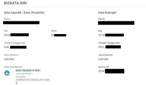 |
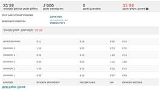 |
3. Kalau datanya sudah ada di web PPDB, pada tanggal 14-19 ajukan akun di di web PPDB, sediakan scan/foto Pakta Integritas dan scan/foto dokumen yang diperlukan, dan melakukan ajuan akun dari rumah.
4. Kalau datanya belum ada hingga 14 Juni 2021, silakan lihat pertanyaan selanjutnya.
Tanya: Kalau data saya tidak muncul di web PPDB pada tanggal 14 Juni 2021, apakah yang harus saya lakukan?
Jawab:
Silakan datang ke SMA/SMK yang dituju dan minta bantuan di sana dengan membawa:
- Kartu Keluarga (KK)
- Surat Keterangan Nilai Rapor
- Piagam kejuaraan tertinggi (jika punya)
- Kartu KIP/PIP (jika punya) atau bukti lain yang relevan dan masih berlaku sebagai penerima PIP
- Surat keterangan domisili pesantren (jika punya)
- Surat keterangan perpindahan orang tua (jika punya)
- Pakta integritas dan surat pernyataan sehat (jadi 1 surat)
Tanya: Saya lulusan 2020/sebelumnya dan data saya tidak ada di web PPDB, apakah yang harus saya lakukan?
Jawab:
Anda harus membuat ajuan data sendiri dan mengisi serta upload data sendiri. Silakan datang ke SMA/SMK yang dituju dengan membawa dokumen-dokumen seperti di atas.
Tanya: Saya lulusan dari luar Jawa Tengah dan data saya tidak ada di web PPDB, apakah yang harus saya lakukan?
Jawab:
Anda harus membuat ajuan data sendiri dan mengisi serta upload data sendiri. Silakan datang ke SMA/SMK yang dituju dengan membawa dokumen-dokumen seperti di atas.
Tanya: KK saya dari luar Jawa Tengah, tapi SMP/MTs saya di Jawa Tengah, apakah saya harus mengisi data sendiri?
Jawab:
Jika Anda lulusan 2021, maka data Anda harusnya sudah diisikan oleh pihak SMP/MTs. Silakan lakukan “Periksa Data Siswa” seperti di atas dulu. Kalau datanya ada, silakan melakukan ajuan akun 14-19 Juni dan langkah selanjutnya.
Jika data tidak ada, silakan datang ke SMA/SMK yang dituju untuk minta bantuan.
Tanya: Data saya ada di web PPDB, tapi nilai saya berbeda dengan nilai di Surat Keterangan Rapor, apa yang harus saya lakukan?
Jawab:
Patokan nilai PPDB adalah nilai di web PPDB.
Jika nilai di web lebih rendah daripada di Surat Keterangan Rapor, tidak perlu diperbaiki.
Jika nilai di web lebih tinggi daripada di Surat Keterangan Rapor, maka Anda harus minta SMP/MTs untuk memperbaiki data nilai di Dapodik/Emis.
Jika ada perbedaan jumlah nilai di web PPDB dan surat keterangan rapor, sebaiknya hubungi pihak SMP/MTs untuk memperbaiki data yang tidak valid di Dapodik/Emis atau di surat keterangan rapor.
Tanya: Data map/peta saya di web PPDB tidak sama dengan alamat saya di KK, apa yang harus saya lakukan?
Jawab:
Jika rumah Anda dekat sekolah yang dituju dan Anda mendaftar untuk jalur domisili (SMK) atau zonasi (SMA), maka segera minta pihak SMP/MTs untuk memperbaiki data di Verval Data Individu di web: https://nisn.data.kemdikbud.go.id
Jika rumah Anda cukup jauh dari sekolah yang dituju, tidak perlu perbaikan peta.
Tanya: Apakah tahap-tahap PPDB?
Jawab:
Ada 4 tahap:
1. Ajuan akun: 14-19 Juni 2021
2. Aktivasi akun (pemilihan sekolah dan jurusan): 21-24 Juni 2021
- Perbaikan pilihan sekolah/jurusan
- Pindah jenjang (SMA ke SMK atau SMK ke SMA)
- Pengecekan secara berkala untuk memantau perkembangan posisi pendaftar
3. Pengumuman: 26 Juni 2021
4. Daftar ulang: 28 Juni-2 Juli 2021
Tanya: Bisakah saya datang langsung ke SMKN 2 Pati untuk mendaftar langsung?
Jawab:
Semua pendaftaran HARUS online. Tidak ada pendaftaran langsung.
Tanya: Kalau saya bingung cara mendaftar, bisakah saya bertanya langsung saat pendaftaran?
Jawab:
Karena status Pati, Kudus, dan Jepara sebagai zona merah Covid-19, sangat disarankan pengajuan akun (14-19 Juni 2021) dan pemilihan jurusan (21-24 Juni 2021) dari rumah masing-masing, kecuali bagi yang memang nilainya belum ada di web PPDB.
Jika ingin bertanya, sebisa mungkin silakan bertanya melalui telepon/Telegram/WA ke nomor hotline yang tercantum.
Jika terpaksa harus datang ke posko pengaduan masyarakat, Anda bisa datang di SMKN 2 Pati mulai 14 Juni 2021 jam 08.00 WIB sesuai jam kerja. Tapi Anda tetap harus memakai HP atau laptop sendiri dan menerapkan protokol kesehatan (dicek suhu badan, cuci tangan, dan pakai masker). Anda juga harus memakai HP atau laptop sendiri, karena SMKN 2 Pati hanya menyediakan wifi gratis.
Tanya: Adakah hotline/nomor yang bisa dihubungi untuk PPDB?
Jawab: Ada. Jika ada kesulitan dalam pendaftaran, pendaftar bisa bertanya melalui telepon/Telegram/WhatsApp berikut:
1. Pak Widio Pranoto : 085640704046
2. Pak Joko Purnomo : 081575666872
3. Bu Ana Oktavia : 082137729689
4. Pak Luluk Setyo : 085226225900
Bisa juga calon peserta didik bertanya dalam sesi tanya jawab di grup Telegram: https://t.me/InfoPPDBSMKN2Pati
Tanya: Bagaimana cara untuk ajuan akun (14-19 Juni 2021)?
Jawab:
Prosedurnya adalah:
1. Dengan PC/laptop/HP yang terkoneksi internet, gunakan Chrome/browser yang ada, masuk website https://ppdb.jatengprov.go.id/ lalu klik 'Ajuan Akun'.
|
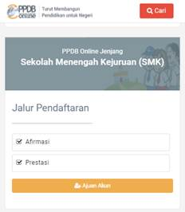 |
2. Isikan NISN, Sekolah Asal, Jenis Lulusan, Tahun Lulus, Domisili, NIK, dan Kode Keamanan dan klik 'Lanjutkan'.
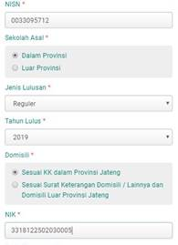
3. Upload scan (file PDF) atau foto dari Pakta Integritas/Surat Pernyataan Integritas dan Kesehatan’ yang sudah diisi, diberi materai, dan ditandatangani (besar file maksimal 1 MB).
4. Muncul data:
ü Nama Asal Sekolah (caranya: klik tanda kaca pembesar, isi nama SMP (misal: SMP Negeri 4 Pati) lalu klik 'Cari', kemudian klik nama SMP yang dicari di bawahnya)
ü Status Data Dinas Sosial (terisi otomatis)
ü Status Data Dinas Kesehatan (terisi otomatis)
ü Nilai Rapor Bahasa Indonesia (terisi otomatis)
ü Nilai Rapor Matematika (terisi otomatis)
ü Nilai Rapor Bahasa Inggris (terisi otomatis)
ü Nilai Rapor IPA (terisi otomatis)
ü Nilai Prestasi/Kejuaraan (terisi otomatis)
Jika sudah benar, klik 'Lanjutkan'
5.
6. Jika Anda sudah yakin data yang Anda isikan benar, centang 'Setuju dengan data di atas'. Klik 'Cetak bukti ajuan akun'. Simpan dalam bentuk pdf file registrasi akun/ajuan akun di HP atau di flashdisk. File bisa dicetak/diprint di printer (di tempat fotokopi di warnet). Catat nomor peserta dan token. Jangan sampai hilang.
Bagaimana cara aktivasi akun (pemilihan sekolah dan jurusan) 21-24 Juni 2021?
Jawab:
Prosedurnya adalah:
1. Dengan PC/laptop/HP yang terkoneksi internet, gunakan Chrome/browser yang ada, masuk website https://ppdb.jatengprov.go.id/ lalu klik 'x' pada pemberitahuan download template pakta integritas. Pada bagian PPDB SMK, klik tulisan ‘Sekolah Menengah Kejuruan (SMK)’. Klik pada tulisan ‘Domisili Terdekat, ‘Prestasi’ atau ‘Afirmasi’ sesuai jalur yang ditempuh.
|
|

2. Klik ‘Melakukan Aktivasi Akun’ lalu klik ‘Aktivasi Akun’.
3. Isikan:
ü Nomor peserta: diisi nomor peserta yang didapat dari cetak registrasi akun
ü Token: diisi token yang didapat dari cetak registrasi akun
ü Email: diisi email (kalau punya), kalau tidak punya email, boleh dikosongkan.
Tapi jika Anda tidak mengisi email, maka Anda TIDAK BOLEH LUPA password PPDB (karena email bisa dipakai untuk mendapatkan password PPDB yang terlupa)
ü Isikan password yang diinginkan untuk akun. Minimal terdiri 8 karakter. Pakai kata yang mudah diingat! Catat password Anda. JANGAN SAMPAI LUPA! Jika lupa, Anda tidak bisa mengecek perkembangan PPDB.
Setelah selesai, klik ‘Aktivasi Akun’.
4. Klik ‘Pilih Sekolah’ kemudian isikan pilihan dalam obyek Pemeriksaan Kesehatan:
ü Buta warna : pilih ‘Tidak’ jika tidak buta warna
ü Gangguan pendengaran : pilih ‘Tidak’ jika tidak punya gangguan pendengaran
ü Gangguan mulut dan gigi : pilih ‘Tidak’ jika tidak punya gangguan mulut dan gigi
Setelah selesai, klik ‘Lanjutkan’.
5. Klik ‘Pilih/Tambah Sekolah’
6. Ketikkan ‘SMK Negeri 2 Pati’ dalam daftar pencarian, lalu klik ‘SMK Negeri 2 Pati’ jika sudah ditemukan.
Setelah selesai, klik ‘Lanjutkan’.
7. Pilih kompetensi keahliah/jurusan yang diinginkan sebagai pilihan 1 dan klik ‘Simpan’.
8. Untuk melakukan penambahan jurusan pilihan 2 dan 3, lakukan berulang-ulang dari langkah ke-6 (Pilih/Tambah Sekolah), hingga maksimal 3 jurusan yang berbeda dan maksimal 2 SMK yang berbeda.
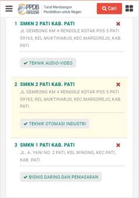
9. Jika ingin mengubah pilihan SMK jika semua sekolah pilihan dan jurusan pilihan sudah tercantum dalam pilihan 1, 2, dan 3, untuk menghapus pilihan, klik ‘x’ dan pilih sekolah dan jurusan lagi dari langkah sebelumnya.
10. Setelah yakin dengan pilihan, klik ‘Saya setuju dengan pernyataan di atas’ dan ‘Lanjutkan’. Klik ‘Cetak Bukti Pendaftaran’. Simpan file bukti pendaftaran di HP/flashdisk.
|
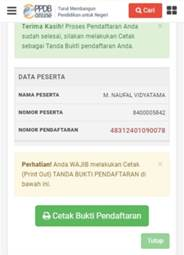 |
11. Cetak/print bukti pendaftaran tersebut di tempat fotokopi atau warnet, lalu tanda tangani. Bukti pendaftaran diperlukan untuk daftar ulang.
|
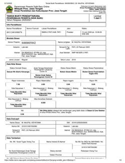 |
Tanya: Bagaimana cara memperbaiki data jika saya SUDAH aktivasi/SUDAH memilih sekolah dan jurusan?
Jawab:
Saat ini belum ada informasi.
Tanya: Bagaimana prosedur/cara mengecek peringkat/ranking/posisi pendaftar apakah masuk pilihan 1, 2, atau 3?
Jawab:
Ada 2 (cara):
Cara pertama: mengecek ranking pendaftar individual
1. Dengan PC/laptop/HP yang terkoneksi internet, gunakan Chrome/browser yang ada, masuk website https://ppdb.jatengprov.go.id/. Setelah itu, klik icon ‘Cari’ dan masukkan nomor pendaftaran dan klik icon kaca pembesar.
|
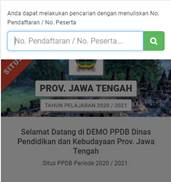 |
2. Status pendaftaran dapat dilihat.
Cara kedua: untuk melihat semua pendaftar dan rankingnya di suatu kompetensi keahlian/jurusan:
1. Dengan PC/laptop/HP yang terkoneksi internet, gunakan Chrome/browser yang ada, masuk website https://ppdb.jatengprov.go.id/. Pada bagian PPDB SMK, klik tulisan ‘Sekolah Menengah Kejuruan (SMK)’. Klik pada tulisan ‘Domisili Terdekat’, ‘Prestasi’ atau ‘Afirmasi’ sesuai jalur yang ditempuh, klik ‘Memantau Hasil Seleksi’, lau klik ‘Pilih Sekolah’
|
|

2. Pada kotak pencarian isikan SMK Negeri 2 Pati lalu klik icon kaca pembesar, dan klik SMK Negeri 2 Pati di bawahnya.
|
|
|


3. Klik pilihan kompetensi keahlian/jurusan yang ingin dilihat keseluruhan ranking calon peserta didik yang mendaftar.
|
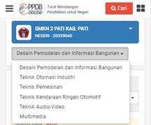 |
Tanya: Bagaimana cara mengubah pilihan sekolah lain dan atau jurusan lain?
Jawab:
Prosedurnya adalah:
1. Dengan PC/laptop/HP yang terkoneksi internet, gunakan Chrome/browser yang ada, masuk website https://ppdb.jatengprov.go.id/. Pada bagian PPDB SMK, klik tulisan ‘Sekolah Menengah Kejuruan (SMK)’. Klik pada tulisan ‘Domisili Terdekat’, ‘Prestasi’ atau ‘Afirmasi’ sesuai jalur yang ditempuh.
|
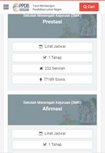 |
2. Klik ‘Melakukan Aktivasi Akun’ lalu klik ‘Login’. Kemudian masukkan nomor peserta, password, dan kode keamanan dan klik tombol ‘Login’.
3. Klik ‘Ubah Pilihan’. Klik ‘x’ untuk menghapus pilihan SMK dan kompetensi/jurusan yang ingin dihapus. Klik ‘Lanjutkan’
4. Klik ‘Pilih/Tambah Sekolah’
5. Ketikkan ‘SMKN 2 Pati’ atau SMK lain dalam daftar pencarian, lalu klik ‘SMKN 2 Pati’ atau nama SMK jika sudah ditemukan. Setelah selesai, klik ‘Lanjutkan’.
6. Pilih kompetensi keahliah/jurusan yang ingin ditambahkan dan klik simpan.
7. Setelah yakin dengan perbaikan/ralat/revisi pilihan jurusan 1, 2, dan 3, klik ‘Lanjutkan’.
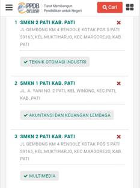
8. Setelah yakin dengan pilihan, klik ‘Saya setuju dengan pernyataan di atas’ dan ‘Lanjutkan’. Klik ‘Cetak Bukti Pendaftaran’. Simpan file bukti pendaftaran di HP/flashdisk.
9. Cetak/print bukti perbaikan/ralat/revisi pendaftaran tersebut di tempat fotokopi atau warnet, lalu tanda tangani. Bukti pendaftaran diperlukan untuk daftar ulang.
|
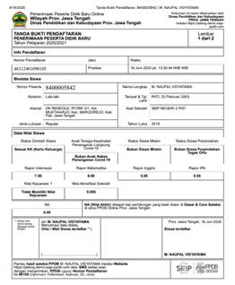 |
Tanya: Bagaimana cara pindah dari SMK ke SMA jika sudah terlanjur memilih jurusan/kompetensi di SMK?
Jawab:
Prosedurnya adalah:
Harus membatalkan/mencabut dari jenjang SMK dulu, lalu buat ajuan akun baru lagi di jenjang SMA.
Cara membatalkan/mencabut dari jenjang SMK:
1. Dengan PC/laptop/HP yang terkoneksi internet, gunakan Chrome/browser yang ada, masuk website https://ppdb.jatengprov.go.id/. Pada bagian PPDB SMK, klik tulisan ‘Sekolah Menengah Kejuruan (SMK)’. Klik pada tulisan ‘Domisili Terdekat’, ‘Prestasi’ atau ‘Afirmasi’ sesuai jalur yang ditempuh.
|
|

2. Klik ‘Melakukan Aktivasi Akun’ lalu klik ‘Login’. Kemudian masukkan nomor peserta, password, dan kode keamanan dan klik tombol ‘Login’.
|
|

3. Klik ‘Menu Lainnya’ dan klik ‘Batalkan Pendaftaran’ untuk mengganti jenjang sekolah (SMK ke SMA atau sebaliknya). Masukkan ‘Password’ dan klik konfirmasi pembatalan setelahnya (klik ‘Ok’).
|
|
Tanya: Bagaimana cara mengecek di mana saya diterima?
Jawab:
Langkahnya sama seperti pengecekan peringkat/ranking pendaftar.
Tanya: Apa saja yang harus dipersiapkan dan dibawa saat daftar ulang?
Jawab:
Untuk semua pendaftar:
1. Asli Pakta Integritas dan Kesehatan (yang diberi materai dan ditandatangani)
2. Asli Bukti pendaftaran asli dari pemilihan jurusan 21-24 Juni 2021 (yang diprint dan ditandatangani)
3. Asli Surat Keterangan Lulus SMP/sederajat atau fotokopi ijazah SMP/MTs (menunjukkan aslinya)
4. Asli Surat Keterangan Nilai Rapor SMP/sederajat semester 1-5
5. Fotokopi rapor SMP/MTs semester 1-6 (biodata di halaman depan rapor ikut difotokopi) (dan menunjukkan aslinya)
6. Fotokopi Akte Kelahiran (menunjukkan aslinya)
7. Fotokopi Kartu Keluarga/KK (menunjukkan aslinya)
Untuk jalur prestasi:
Fotokopi piagam prestasi (yang tertinggi yang dipunyai) (menunjukkan aslinya) (jika punya)
Jika Anda diterima jalur prestasi tanpa ada keterangan prestasi di web PPDB, Anda tidak perlu membawa berkas piagam prestasi.
Untuk jalur afirmasi, membawa berkas berikut ini sesuai status di website PPDB:
ü Asli Surat Keterangan Anak Tenaga Kesehatan Penanganan Covid-19
ü Fotokopi Kartu KIP/PIP (menunjukkan aslinya), atau print/cetakan screenshot data dari website https://pip.kemdikbud.go.id yang memperlihatkan penerimaan dana KIP/PIP hingga 2021.
ü Asli Surat Keterangan dari panti asuhan (jika punya)
Tanya: Bagaimana kriteria pendaftar yang langsung diterima melalui jalur prestasi?
Jawab:
Yang langsung diterima untuk jalur prestasi:
Juara 1, 2, dan 3 tingkat internasional dan juara 1 tingkat nasional untuk kejuaraan berjenjang dalam mata lomba yang ditentukan.
Tanya: Apa saja jenis lomba/kejuaraan yang diperhitungkan?
Jawab:
Jenis kejuaraan tingkat nasional:
1) Olimpiade Sains Nasional (OSN/KSN)
2) Olimpiade Olahraga SiswaNasional (O2SN)
3) Festival dan Lomba Seni Siswa Nasional (FLSN)
4) Gala Siswa Indonesia
5) Olimpiade Literasi Siswa Nasional (OLSN)
6) Olimpiade Penelitian Siswa Nasional (OPSI)
7) Lomba Cipta Seni Pelajar Nasional
8) Kuis Ki Hajar
9) Pekan Olahraga Pelajar Daerah (POPDA)
10) Pekan Olahraga Pelajar Nasional (POPNAS)
11) Pekan Olahraga dan Seni Antar Pondok Pesantren Daerah (POSPEDA)
12) Pekan Olahraga dan Seni Antar Pondok Pesantren Nasional(POSPENAS)
13) Pekan Olahraga Daerah (POPDA)
14) Pekan Olahraga Provinsi (PORPROV)
15) Kejuaraan Nasional Pra-PON
16) Pekan Olahraga Nasional (PON)
17) Pekan Olahraga Paralimpik Pelajar Daerah (PEPARPEDA)
18) Pekan Olahraga Paralimpik Pelajar Nasional (PEPARPENAS)
19) Pekan Olahraga Pelajar Daerah - Special Olimpic Indonesia (POPDA-SOINA)
20) Pekan Olahraga Pelajar Nasional - Special Olimpic Indonesia (POPDA-SOINA)
21) Lomba Mata Pelajaran Pendidikan Agama lslam dan Seni Islami(MAPST)
22) MTQ Pelajar
23) Kompetisi Sains Madrasah (KSM)
24) Kompetisi Robotik Madrasah
25) Pekan Keterampilan dan Seni Pendidikan Agama Islam (PENTAS PAI)
26) Lomba Tingkat (LT) Pramuka Penggalang
Jenis kejuaraan tingkat internasional:
1) International Mathematics and Science Olympiad (IMSO)
2) International Olympiad In Informatics (IOI)
3) International Teenagers Mathematics Olympiad (ITMO)
4) International Physics Olympiad (IPhO)
5) International Chemistry Olympiad (IChO)
6) International Biology Olympiad (IBO)
7) International Geography Olympiad (IGeO)
8) ASEAN Skill Competition (ASC)
9) ASEAN School Games
10) International Chemistry Olympiad (IChO)
11) International Biology Olympiad (IBO)
12) International Olympiad on Astronomy and Astrophysics (IOAA)
13) Intemational Olympiad in Informatics (IOI)
14) The Asia Pasific Informatic Olympiad (APIO)
Tanya: Bagaimana penghitungan Nilai Akhir (NA)?
Jawab:
NA = (Nilai Rapor x Nilai Akreditasi) + Nilai Kejuaraan
Tanya: Apakah saya perlu melampirkan surat keterangan sehat dari dokter?
Jawab:
Tidak wajib. Yang wajib adalah pakta integritas yang jadi satu dengan keterangan sehat. Tapi jika ada, surat keterangan sehat dari dokter pemerintah (Puskesmas/Pusdokkes/RS) bisa dilampirkan saat daftar ulang.
Tanya: Bagaimana jika saya belum cetak token saat aktivasi akun?
Jawab:
Token bisa dicetak ulang dengan cara:
1. Masuk https://www.ppdb.jatengprov.go.id
2. Klik tulisan Sekolah Menengah Kejuruah
3. Klik 'Cetak ajuan akun'
4. Masukkan NISN, tanggal lahir, kode keamanan.
Tanya: Bagaimana cara mengubah data (afirmasi/prestasi, nilai rapor, ganti/tambah pilihan jurusan, atau pindah dari SMA ke SMK atau dari SMK ke SMA)?
Jawab:
1. Batalkan aktivasi/pendaftaran
2. Logout (klik ‘Keluar’)
3. Ajuan akun lagi dan edit data yang ingin diubah/diganti dan cetak bukti ajuan akun (ada nomor peserta dan token)
4. Aktivasi akun lagi dan cetak bukti pendaftaran yang baru (ada nomor peserta dan pilihan jurusan)
Tanya: Bagaimana cara membatalkan pendaftaran?
Jawab:
Cara membatalkan/mencabut dari jenjang SMK:
1. Dengan PC/laptop/HP yang terkoneksi internet, gunakan Chrome/browser yang ada, masuk website https://ppdb.jatengprov.go.id/ lalu klik 'x' pada pemberitahuan download template pakta integritas. Pada bagian PPDB SMK, klik tulisan ‘Sekolah Menengah Kejuruan (SMK)’. Klik pada tulisan ‘Prestasi’ atau ‘Afirmasi’ sesuai jalur yang ditempuh.
|
|
2. Klik ‘Melakukan Aktivasi Akun’ lalu klik ‘Login’. Kemudian masukkan nomor peserta, password, dan kode keamanan dan klik tombol ‘Login’.
3. Klik ‘Menu Lainnya’ dan klik ‘Batalkan Pendaftaran’. Masukkan ‘Password’ dan klik konfirmasi pembatalan setelahnya (klik ‘Ok’).
|
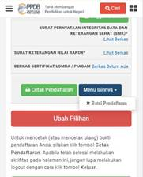 |